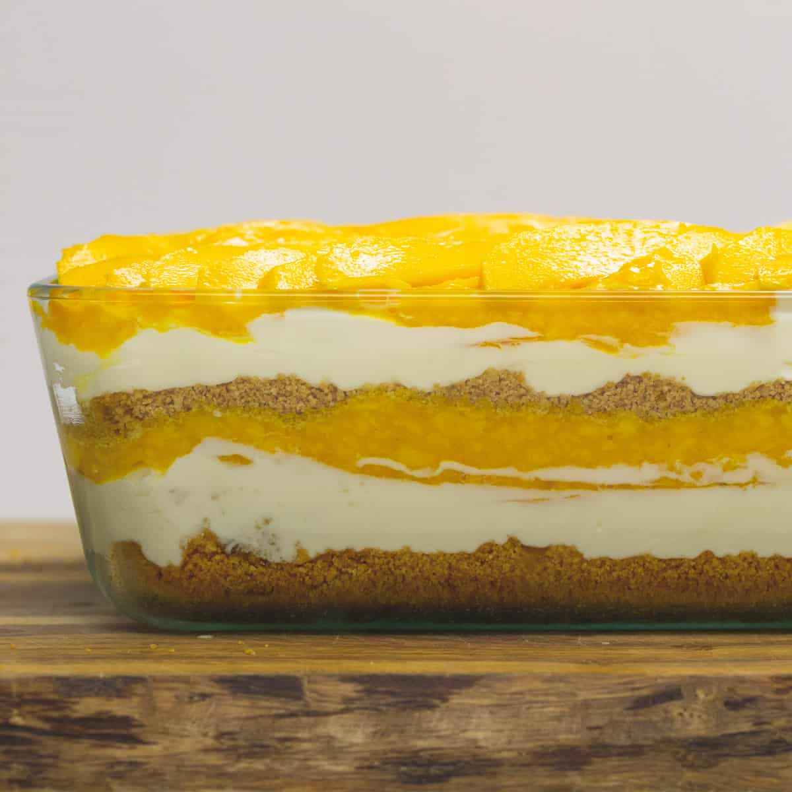

ABOUT MANGOFLOAT
What is mango float made of?
Who invented mango float?
"Mango float or crema de mangga is a Filipino icebox cake dessert made with layers of ladyfingers (broas) or graham crackers, whipped cream, condensed milk, and ripe carabao mangoes. It is chilled for a few hours before serving, though it can also be frozen to give it an ice cream-like consistency.
Mango is the national fruit of the Philippines, so it's no surprise that the Philippines created the popular Mango Float. Put together with simple ingredients layered with mango's biscuits and condensed milk, this favourite treat is a real crowd pleaser. If you're a big fan of mango then we're sure you'll"
LOVE
"this!"
"Mango float, also known as mango royale, crema de mangga or mango graham cake is a popular Filipino dessert. This icebox cake is made from layers of graham crackers, whipped cream, condensed milk, and ripe mangoes."
MANGO FLOAT INGREDIENTS
Mango
The immature fruit has green skin that gradually turns yellow, orange, purple, red, or combinations of these colors as the fruit matures.
Grahams(crushed and crackers)
A sweet flavored cracker made with graham flour.
Condensed Milk
Sweetened condensed milk, is regular cow's milk that has been concentrated and sweetened with sugar.
nestle cream
Made from real milk and has a creamy consistent texture making it the best solution for stuffing, spreading or adding to any dessert to get that desired light creamy feel.